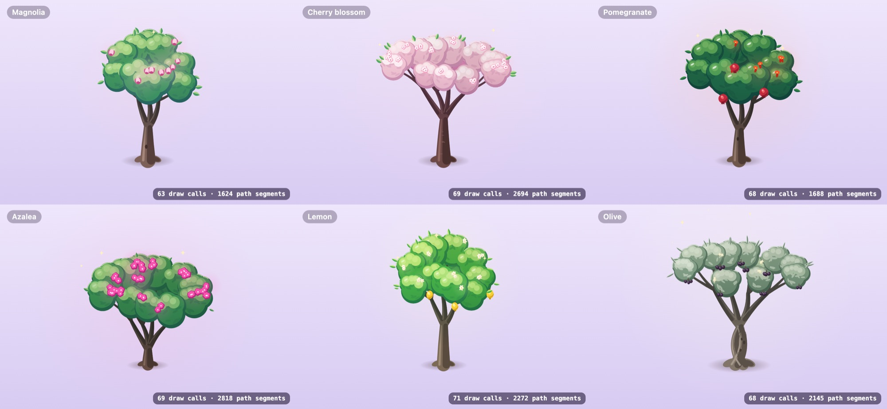
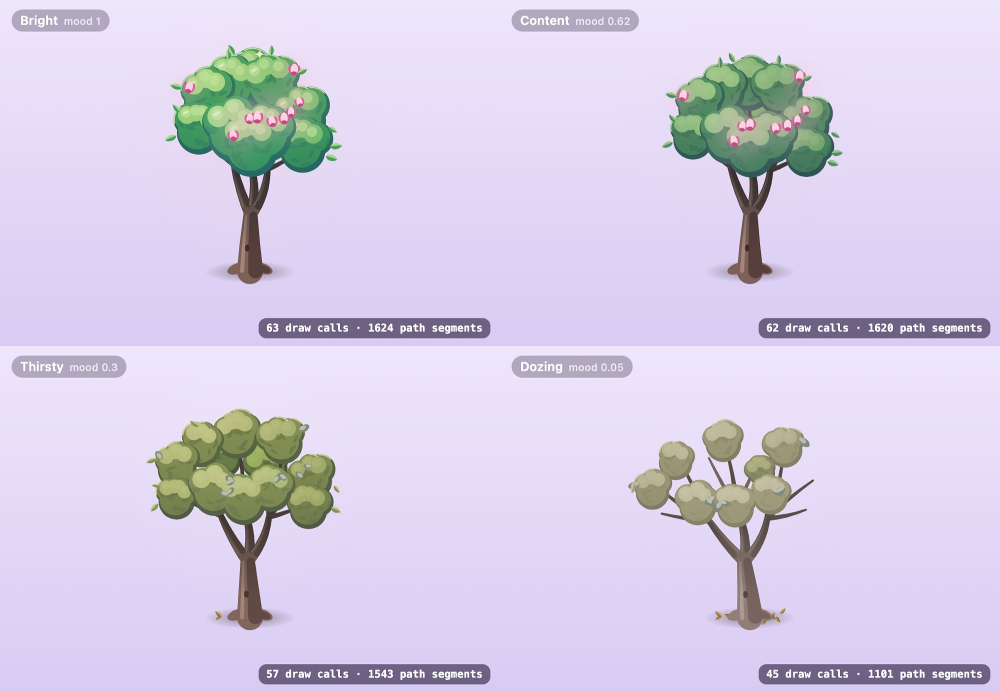
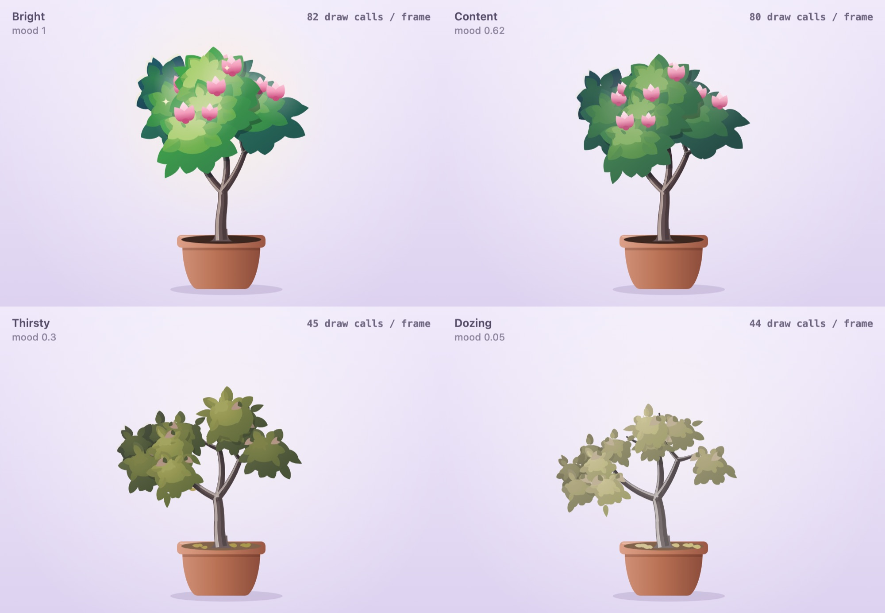
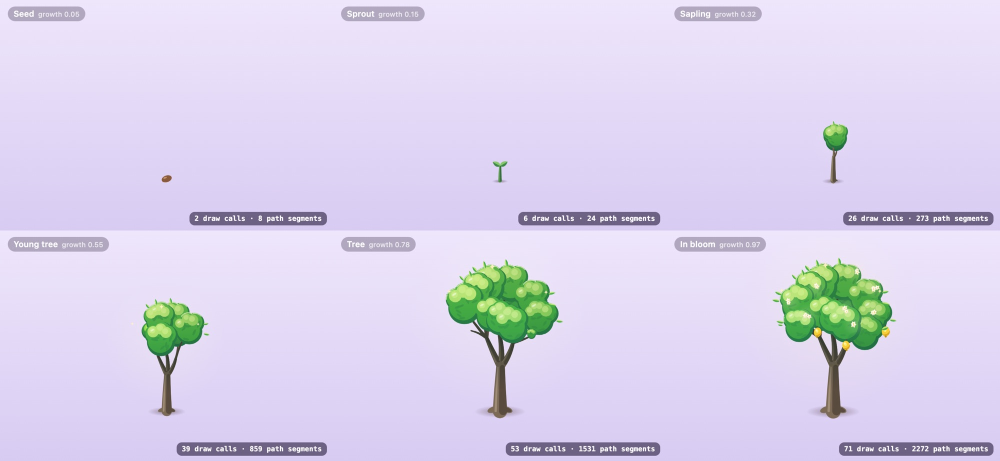
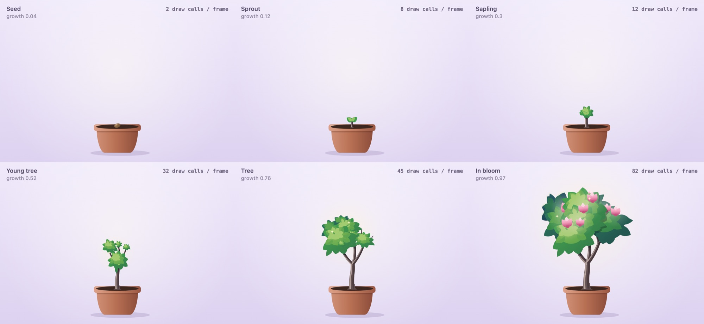
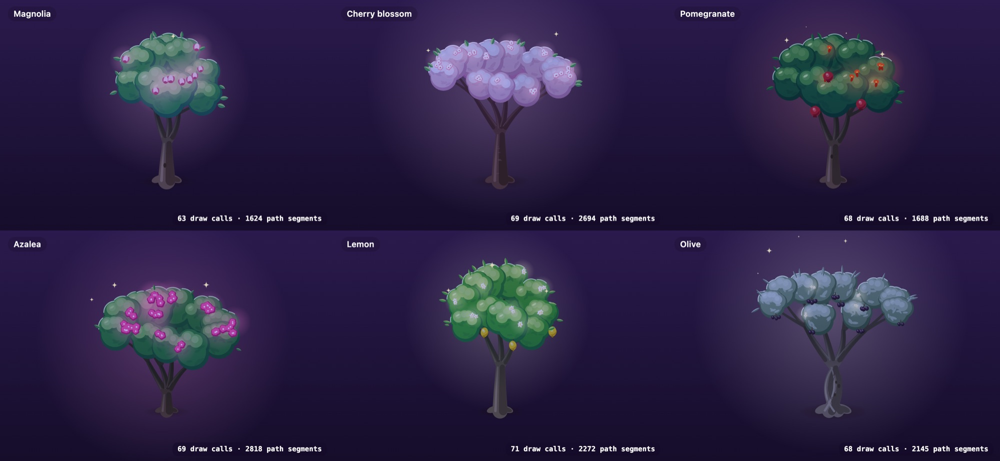
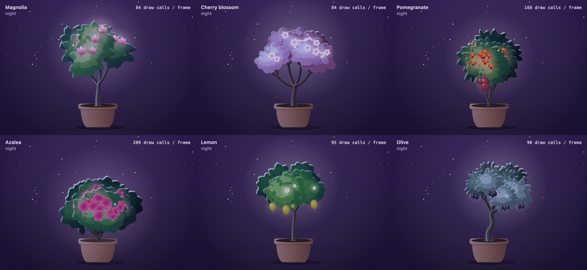
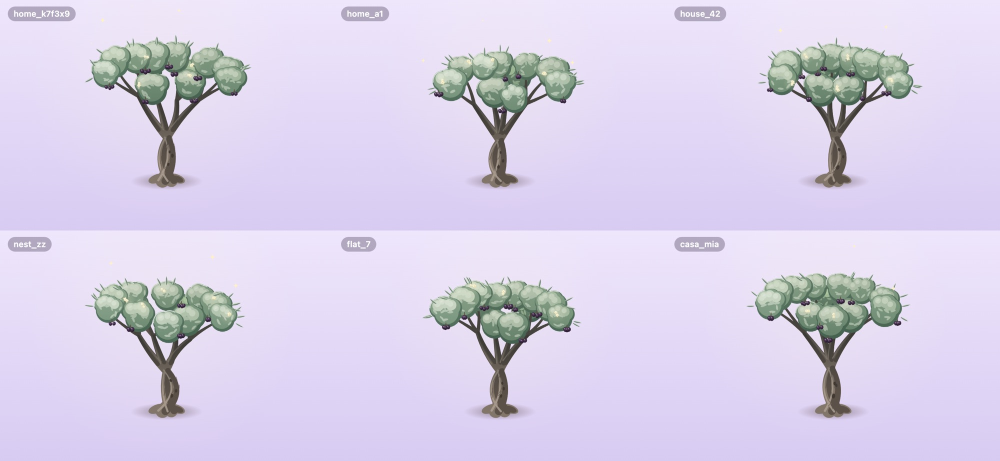
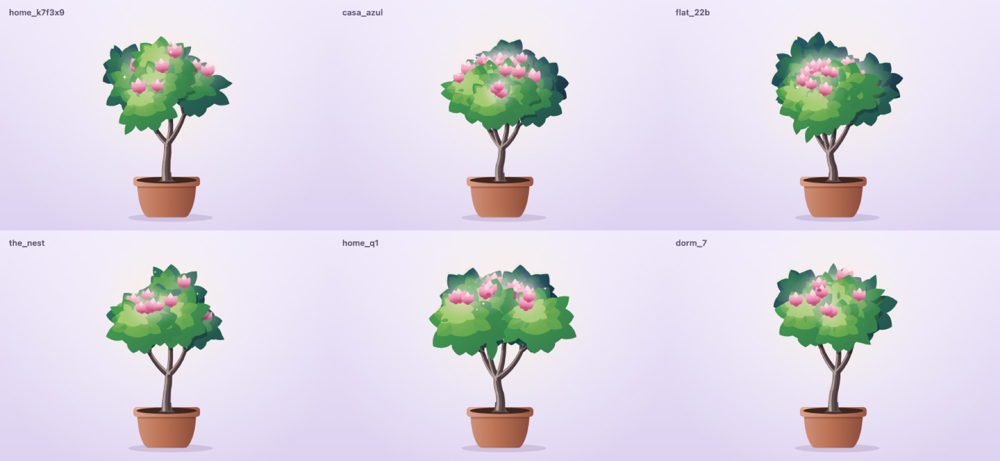

Nestie's trees: two directions
Both are drawn entirely in code, seeded per household, and drawn only when the tree's state changes; the wind bends that picture as it is. Same six species, same moods, same growth stages.
The tree is B, layered gouache — your choice, for being more detailed, more premium, more realistic and more artsy. Since this page was made it had a second pass: shadows cast inside the canopy, the canopy's shade on the branches, a night rim light, petals with gradients and stamens, and quiet moods that read as one tired tree. Its renders below are the second pass.
- A, soft canopy, stays here for reference, with its Swift port (
soft-canopy/CanopyPainter.swift, not compiled into the app).
The six species, by day


Moods: bright, content, thirsty, dozing


Growing up


At night


Every house grows its own

